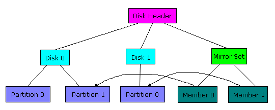
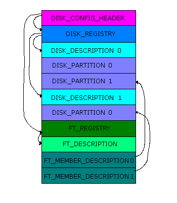

The HKLM\System\Disk key is the heart of Windows NT 4.0's volume management. Under this key, which is created by the NT Disk Administrator program, you'll find a binary-data value called Information. Its this value that contains the configuration of recognized partitions, their drive-letter assignment information, and the definition of any fault-tolerant or multi-volume logical drives that exist on a machine. The Disk key has been around since the first releases of NT, but Microsoft has never documented its format. In this article I'm going to describe the layout of the Disk key and present a program, Diskkey, that will (what else?) read, decode, and print the information stored in the Disk\Information value. If you've ever been curious about how fault-tolerant drives are constructed in NT, or you wish to write your own version of the Resource Kit's FT-Edit program for managing NT volumes, then you'll find the information here interesting and/or useful.
The HKLM\System\Disk key is created the first time you run Disk Administrator. Disk Administrator makes a value called Information, where it initially stores information about each hard-disk in the system, including the layout of partitions on the drive. As you use Disk Administrator to assign drive letters, create and delete partitions, or configure fault-tolerant drives, the Information value is updated to reflect changes.
You may also find another other value under the Disk key if you've specified that you want a particular drive letter to be mapped to your CD-ROM. The value's name will usually be \device\CdRom0 and it is a string value representing the assigned drive letter (e.g. "G:"). Of course, if you have more than one CD-ROM on your system you might have more values with similar names for them.
Besides Disk Administrator, the other components in an NT system that read the Disk key include the fault-tolerant disk driver (ftdisk.sys), and Win32. During its initialization FT-Disk determines what fault-tolerant and multi-volume drives exist on the machine by decoding the Information value. These drive types include mirrored drives, stripe sets, stripe sets with parity, and volume sets. Win32 reads the Information value, and possibly the \device\CdRomXX values, when assigning drive letters to represent partitions.
The Information value is variable length, since there is not a fixed number of disks or fault-tolerant drives that can exist in NT. The data stored in the value is hierarchical in nature, and a particular data structure is used to describe components at each level in the hierarchy. The diagram below shows how the data is organized with an example system that has two hard drives. The first hard drive has two partitions on it, one of which is half of a mirrored drive. The second hard drive consists of only one partition that is the other half of the mirror-set.
At the top of the diagram is the disk header, which is represented with the DISK_CONFIG_HEADER data structure. Besides a version number, the important fields in this data structure locate the header for the disk description and the fault-tolerant description headers. The disk description header, DISK_REGISTRY (not shown), precedes information about the disks in the system. In turn, each disk header, of type DISK_DESCRIPTION, precedes the data that describes the partitions on the disk. The partitions are described in DISK_PARTITION data structures.
A similar approach is taken on the fault-tolerant side of the tree, where a FT_REGISTRY data structure (not shown) precedes the description of each fault-tolerant set on the system (mirrored drive, stripe-set, etc.). Each fault-tolerant set starts off with a header of type FT_DESCRIPTION, and is followed by FT_MEMBER_DESCRIPTION that describe each component of the particular fault-tolerant set.
For the example configuration shown in the figure above, the Information value would be laid out as shown below.
Note how each level in the hierarchy locates the components within it. In addition, fault tolerant members, such as the members of the mirror set in the example, locate the disk partition they correspond to both by referencing the logical partitions disk and partition number, and by specifying an offset into the Information value where the partition's description is located.
Each level in the structure may have zero or more pieces. A disk can have no partitions or 5 partitions (for instance),and a fault-tolerant set can consist of one or more members (partitions). The number of partitions or fault-tolerant members is stored in the disk or fault-tolerant description data structures. Likewise, the number of disks in the system is stored in the disk registry structure and the number of fault-tolerant sets is stored in the fault-tolerant registry structure. At the top of the tree, the disk configuration data structure locates the disk registry and fault-tolerant registry data structures with their offsets into the Information value.
Thus, to traverse the fault-tolerant information for example, the fault-tolerant registry is first located using its offset in the configuration header. Then the number of fault-tolerant sets is noted and the members are iterated by using the size of the data structures as indexes into the Information value.
Some of the interesting information stored within the data structures include drive letter assignments. Each partition has a field that indicates whether the user has specified that a particular drive letter should be assigned, or if the system should assign a letter. In the fault-tolerant member data structures, as well as the fault-tolerant set data structures, are stored the state of the fault-tolerant component. You'll typically see that the members and sets are healthy, but its possible to find that a part of a mirror has been orphaned, or that a stripe set member is regenerating, if there were errors encountered on the drive. Finally, you'll see the values of the disk signatures that Disk Administrator indicates it writes to the drives it has seen.
The Diskkey program is included here to both demonstrate how to read the Disk key and to provide header files that can be used in your own volume management programs. Diskkey does nothing more than dump the information it finds in the Disk key.
Some of the data structures defined in diskkey.h are taken from their definitions in the NTDDK file ntddft.h, while others have been derived through experimentation and correlation with the ntddft.h structures.
Disk management has undergoing some major changes in Win2K, with the incorporation of Veritas' volume-management technology. The HKM\Disk\Information value is still present, but fault-tolerant information is no longer stored there.
Fault-tolerant information in Win2K is stored directly on disk, which makes the loss of fault-tolerant drives less likely. You can find more information on the new formatting used for volumes in Windows Internals , download LDMDump, a program that dumps the contents of the Win2K on-disk partitioning database and DiskExt, a utility that uses an IOCTL to get volume disk-maps.